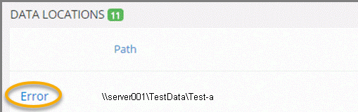

For a selected medium, if a job cannot complete (with or without errors), an Error link appears to the left of the data path as shown in the following figure. For example, when copy errors occur, the job is not able to complete and is paused. File copy errors occur when the source folder and the destination Copy folder have file count mismatches.

Take the following steps if you see an error link:
Research the job (in eCapture if needed), then correct issues.
Click the Requeue button to restart the job.